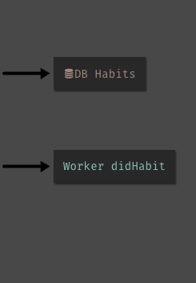

Navigate your codebase
Roles & Responsibilities
For this project I did the problem analysis, user interaction flow, wireframes, interactive designs, and MVP implementation. The CTO helped me cut scope for the MVP and implemented follow-up changes.
Developers have trouble getting around in their code base
Dark lays it's structural elements (code and data schemas) in floating boxes with no order to them. Developers spend alot of time panning, dragging, jumping around their project space. Why do they do that?
1. To check up on DB schemas
Developers spend a lot of time dragging databses close to the code that uses it. Because DB::set requires the data inserted to match the schema exactly.
When a function references a DB that experience is is even worse! Since functions are in their own seperate space, developers must to go back to the main space to see the DB schema. They must either have fantastic short term memory, or take a screenshot of the DB double check their code.
2. To read/write in functions
Developers can create functions, which will be accessible throughout their own project. But these functions are NOT accessible within the main space; they exist in their own little world. Functions are not accessible from the code that uses it, and only reached through clicking on a link in the sidebar.
3. To understand workers
Workers are like async functions, which appears in the main space. But that doesn't make working with them any easier.
Unlike functions they take only one argument event of type Any. The developer has to drag them near their code to determine its expected input, just like DBs. But unlike DBs, which have a set schema, the developer must read through the code to figure out what is the expected type and structure of the input.
How did we get here?
Problems we face today are created by people in the past with the best intentions
The founder's vision for Dark is to bring data into development. He would start off with "imagine a city, where you have boroughs and neighborhoods...", he wanted constructs in Dark to be laid out as if they are on a map. The value of Dark is it would show users' live (or cumulative) traffic as it flowed through the codebase.
The floating boxes (of code and DBs) are one day suppose to have dots/lines flowing between them to show user live traffic. They will organize code for developers instead of having files. File systems, he theorized, are arbitrary ways of splitting code. It gives developers more problems to worry about, such as dependency cycles.
Let's think through the city analogy


If the endpoints and datastores are points of interest, then the paths data may take are streets and highways.

The path a single trace will take is a trip.
Over time we can construct a cumulative flow of illustrate the popularity of certain paths. The developer will know which parts of the code base, they should devote more resources to.
Unfortunately, most of our users don't have live traffic yet*
for the traffic feature to be useful. They find Dark such a frustrating experience they never finish their projects.

They struggle understand what is going on in their codebase because everything is too disorganized.
At the time of this project (early 2019). Now we have many users with live traffic
First, we must pave the streets
How can we help developers understand their code base? So they may write, debug, and edit code with ease?For this case study, we'll be using a simple habits tracker application.
The you sets a weekly goal for how many times you want to do the activity (ie: run 3 times a week). When you update with a habit done, the API checks to see if you've reached your goal. If you have, you'll get a text with a cute meme, otherwise you'll just get an motivational quote instead.
City planning!
- In order to create a useful interface for writing & editing code, we must answer the following questions:
- What are all the possible paths a trace can take once an endpoint recieves the data?
- How do we show the navigation of the through these paths?
- What do information should be available for each component type?
Let's consider one path

POST /track gets hit it when you've completed a habit. Most of the execution is offloaded to a queue (the "didHabit" worker). The worker will add an entry to the Tracker DB, and send you a meme if you've meet your weekly goal.
Adding points along the path
 |  |
We start off with POST /track, its code it references Habits DB with DB::get. And emits an event to "didHabit" worker. So we add them as references. References allow the developer to preview or go down the path in their program's control flow.
Going down the path
WithdidHabit worker in focus, the developer should still see most of POST /track. The fade out on the left side is for aesthetic balance on this slide show.
When they click into the reference, the screen now show all its contents and focus on it. Adding its own references to the right. In our navigation analogy, you have made your turn and now directions for the next steps are visible.
Are we there yet?
Have we mapped out all the paths we want to capture? When POST /track gets hit, most of its execution is offloaded to a queue (the "didHabit" worker). The worker will add an entry to the Tracker DB, and send you a meme if you've meet your weekly goal.
 |
What is it that is missing? Send meme or encouragement!
Seems like they are in functions. One of the problems our developers face is:
Functions are NOT accessible within the main space; they exist in their own little world. Functions are not accessible from the code that uses it, and only reached through clicking on a link in the sidebar.
Let's references for functions!
Where else are there functions? Let's add those too!
 |
Now, we can go into the code of functions too

What should we show in the references?
So far references are just boxy links, how can we use the space to provide useful information to the developer?
When we look at rest stop signs in highways, they provide information of what's coming up ahead. Sign designers anticapate a driver's needs as they are passing by. Do they need a bathroom break? More gas? A snack? What are our developer's needs?
Reach out @aliceaskwhy, if you want to share badly designed highway signs.
Developers pull databases closer to their code to double check its' schema.

Developers want to see what happesn to their code passed through the function.

We can derive the return type from the code and show the function's type signature.
Developers want to know what the worker expects for input
We can derive the expected input from the worker's code by seeing if there's field access to the event variable or it is passed into function as a typed argument
Designing our city
Let's bring some color consistency and typographic hierarchy.
 |
 |
Now how should we arrange our references in relation to the code?
Considering constraints
Going down the path horizontally might not work. Live values are on the left!
Since they are a core value proposition of the product, we can't just move them without deeper consideration on my side and a lot time convincing the team. I decided to save my energy.
Maybe we can just keep all the references on the right side, with incoming and outgoing arrows for now. We'll think more about their ideal placement later.

It is more important to bring the value of this feature to our users ASAP
Putting it all together
 Hovering over references will highlight where they are used in the code.
Hovering over references will highlight where they are used in the code.
Making it real!
When it came down to build, we had to trim down our requirement. And get an MVP out for users to test and play with. So we had to cut scope.
- Only show references for HTTP code blocks. Worker and function refenrences will be added in later
- Don't show a worker's event structure (because it involves complex program analysis)
- Instead of expanding to see the code in workers and functions, just jumpt to them their location in the project space.
Field test
Overall the feedback was positive. New developers said pointed out it was one of the features they thought made Dark unique. Existing developers event discovered an unintended use case. They used it to depreciate functions and migrate DB schemas.
- But there were several things they didn't like:
- The arrows, differentiating a reference as incoming or outgoing, are to subtle.
- Viewing function code in another space is still disruptive to their workflow
- They want to be able to see caller and reference code side by side.
Revisions
 A simple fix would be to color the arrow and box differently for incoming and outcoing references.
A simple fix would be to color the arrow and box differently for incoming and outcoing references.
But the real cause of user confusion is because we threw everything to the right side, when we didn't want incoming references to overlap the live values. Let's look at how we can solve our conflict with live values.
Idea 1: Move it
We can move the live values into the code, and they would move above the cursor, appearing the line before. If the value is more than one line long, affordances can be added to expand and collapse it.
Idea 2: Show depending on mode
The scope when reading live values is different from when they are looking at incoming references.
 A developer looks at incoming references to see its usage. The code (and consequentally live values) can be a black box. We don't need to show live values then.
A developer looks at incoming references to see its usage. The code (and consequentally live values) can be a black box. We don't need to show live values then.
 When a developer edits code, they want to know what is happening to the data. We fade out the incoming references and show the live value.
When a developer edits code, they want to know what is happening to the data. We fade out the incoming references and show the live value.
Retrospective
After scope was cut, and we implemented references for workers and functions. We made no plan to implement the cut features nor the revisions.
Without moving our incoming references back to the left and showing code of the caller and function side by side. The map/navigation analogy is broken for this feature.